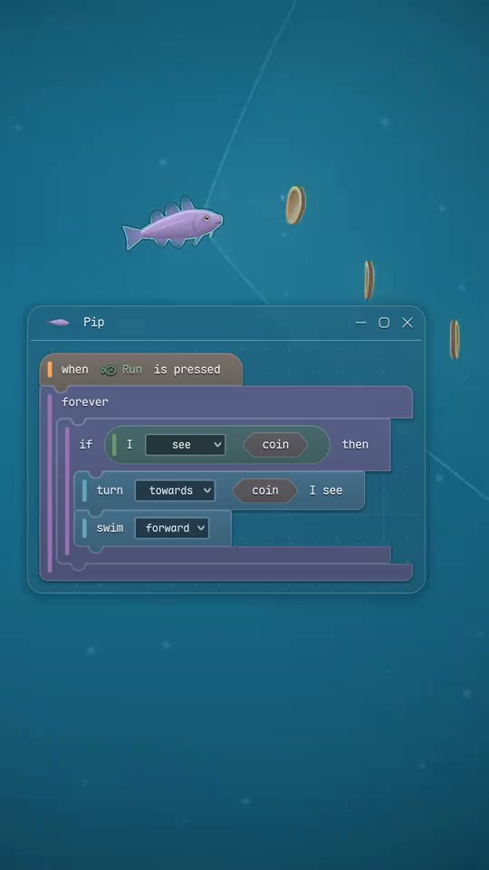
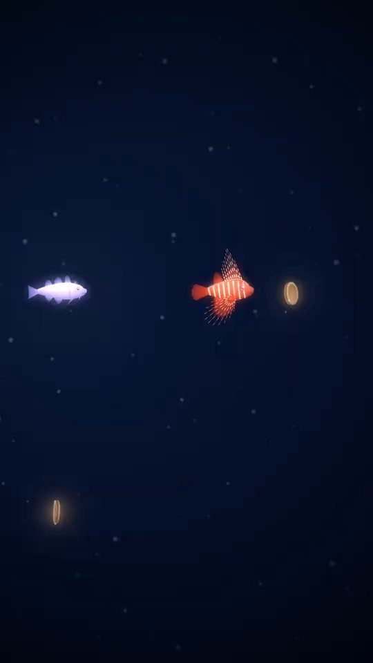
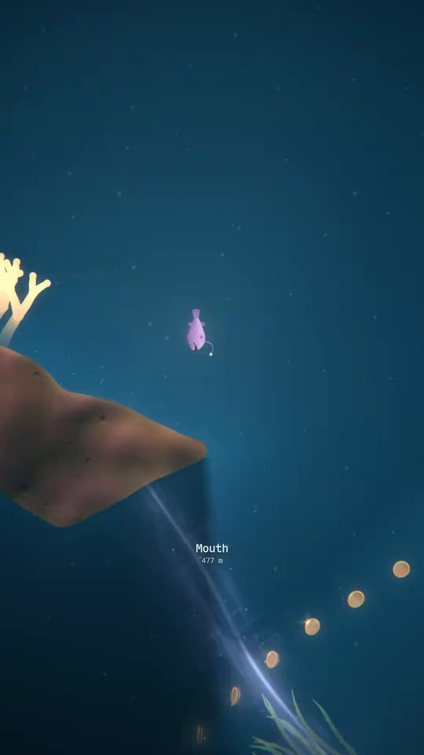
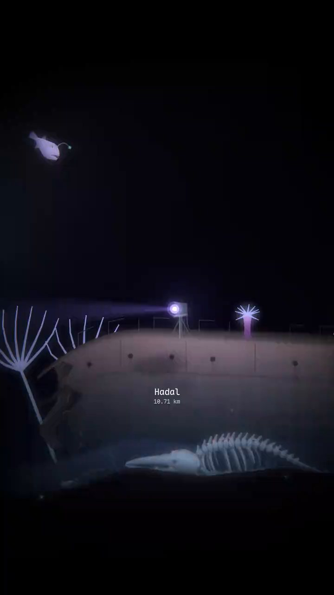

Program fish to explore the deepest trench on Earth, using blocks that read like plain English. Read the code of the hunters down there and improve your own programs.
You buy a fish, give it a program made of blocks and drop it into the sea. From there on it is on its own.
How it plays

Programs you can read out loud
Every block reads like part of a sentence, and blocks snap together, so there is nothing to type and no syntax to get wrong. If you have never written a program before, this is a good place to start.

Hunters run programs too
The trench’s hunters are written in the same blocks. Click one and its program opens, so you can read what it will do before your fish meets it. Then write a fish that slips past it, or one that attacks it from behind.

Deeper down, you mostly watch
Near the surface you can stop a fish and change its program as often as you like. Deeper down that only works inside the light of a violet crystal. Everywhere else it runs as you wrote it.

What happened to the Nadir?
At the bottom of the trench lies a ship broken in two. She went down in 1966. Her searchlight still sweeps the dark, and when one of your fish comes near, the beam stops and stays on it.
Her anchor is still down there, on the sand not far below the surface. When one of your fish reaches it, you read:
“Heavy enough to hold a ship through any storm. So where is the ship?”
Each piece of her your fish reach adds a line or two, and read in order they tell what happened. There is an ending for whoever gets that far.